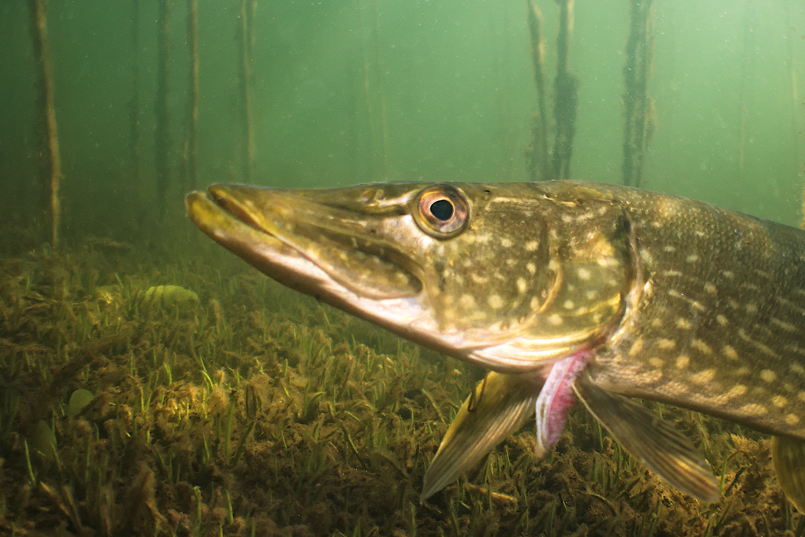
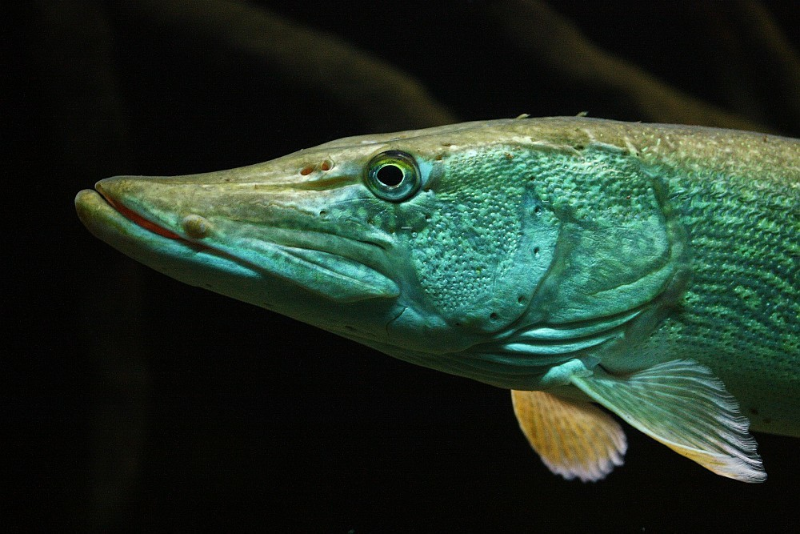

WIŚNIA WĘDKUJE
Ten drapieżnik ma setki zębów

WIŚNIA WĘDKUJE
Samice są większe od samców
WIŚNIA WĘDKUJE
Obserwuj — jutro okoń
ATLAS RYB POLSKI#01
Szczupak
Esox lucius
drapieżnikcała Polskarzeki i jeziora
JAK GO ROZPOZNAĆ?#01
Rozpoznasz go po:
1Długim, spłaszczonym pysku jak „kaczy dziób”
2Jasnych plamkach na oliwkowym tle — kamuflaż w trzcinach
3Płetwie grzbietowej przesuniętej daleko do ogona
NA ŁOWISKU#01
Profil wędkarski
Najlepiejwiosna po okresie ochronnym i jesień
Przynętywoblery, gumy, błystki, żywiec
Ryby Polski · odc. 1
Szczupak
Esox lucius
Czeka w trzcinach. Nieruchomo. Czasem przez wiele minut.
fot. Klaus Kevin Kristensen / iNaturalist, CC BY
ROZDZIAŁ II
Polowanie
z zasadzki
setki
zębów skierowanych do gardła
Ofiara, która raz trafi do pyska, nie ma już drogi ucieczki.
fot. Dirk Godlinski / iNaturalist, CC BY-SA
ROZDZIAŁ III
Pierwszy
na tarle
luty
tarło tuż po zejściu lodów
Dlatego od stycznia do końca kwietnia szczupak jest pod ochroną.
fot. Daughter Dad / iNaturalist, CC BY
WIŚNIA WĘDKUJE
Jaka to ryba?
POZIOM: ŁATWY
3
Podpowiedź: kolczasta płetwa grzbietowa i ciemne pręgi
WIŚNIA WĘDKUJE
Twój typ?
1
WIŚNIA WĘDKUJE
To okoń!
B ✓ OKOŃ
Zgadłeś? Napisz w komentarzu 👇
Jutro trudniejsza ryba